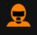

WILL JOSEPH
Give it everything, out of the last corner as well, overtake
WILL JOSEPH
Lando the gap to Hamilton wasa 4.8, 4.8! I think thats a podium mate, i think thats a podium!

LANDO NORRIS
**** YEAAAH BOY!!****YES!

LANDO NORRIS
Well i don't know, i don't want to celebrate too much yet but
WILL JOSEPH
Yes, but, what a drive! What a race!
| Temporada de Lando Norris en 2023 | ||
|---|---|---|
| Victorias | Podios | Puntos |
| 0 Victorias | 11 Podios | 136 Puntos esta temporada |